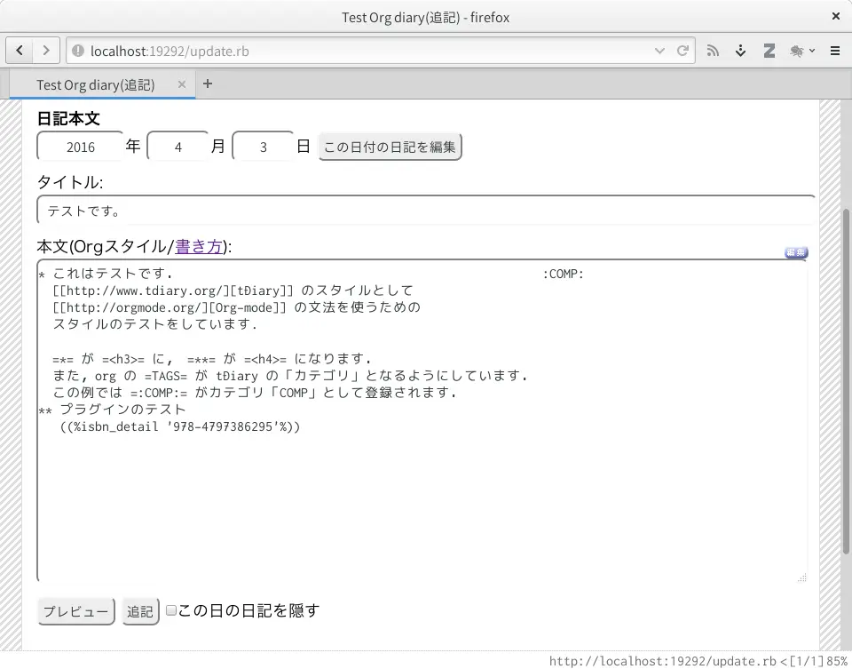
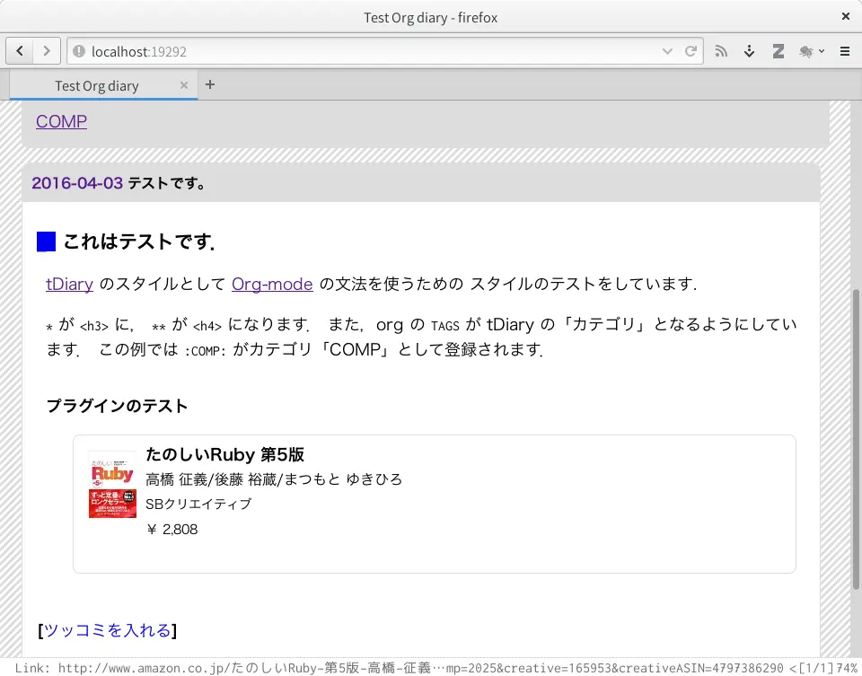

TDiary::Style::Org
What's this?
The TDiary::Style::Org is provide Org-mode style for tDiary.
Convert Org to HTML by wallyqs/org-ruby: An Org mode parser written in Ruby.


Installation
Add this line to your application's Gemfile.local:
gem 'tdiary-style-org'And then execute:
% bundle install
Or install it yourself as:
% gem install tdiary-style-org
Syntax
Basically, samve as Org-mode.
- First Heading
*is converted to<h3> - Org-mode
TAGis converted to CATEGORY of tDiary - plugin syntax:
((%plugin, 'val'%))
Contributing
- Fork it
- Create your feature branch (`git checkout -b my-new-feature`)
- Commit your changes (`git commit -am 'Add some feature'`)
- Push to the branch (`git push origin my-new-feature`)
- Create new Pull Request
TODO ToDo
- on going…
[2/3][X]can't convert TAG to CATEGORY of tDiary[X]How to use plugin? -> RD style like:((%plugin, 'val'%))- Is this syntax best?
[ ]can't handlinng "alt" in image link: due to org-ruby limitation.
Copyright
Copyright (c) 2015-2016 Youhei SASAKI <uwabami@gfd-dennou.org> MIT License Permission is hereby granted, free of charge, to any person obtaining a copy of this software and associated documentation files (the "Software"), to deal in the Software without restriction, including without limitation the rights to use, copy, modify, merge, publish, distribute, sublicense, and/or sell copies of the Software, and to permit persons to whom the Software is furnished to do so, subject to the following conditions: . The above copyright notice and this permission notice shall be included in all copies or substantial portions of the Software. . THE SOFTWARE IS PROVIDED "AS IS", WITHOUT WARRANTY OF ANY KIND, EXPRESS OR IMPLIED, INCLUDING BUT NOT LIMITED TO THE WARRANTIES OF MERCHANTABILITY, FITNESS FOR A PARTICULAR PURPOSE AND NONINFRINGEMENT. IN NO EVENT SHALL THE AUTHORS OR COPYRIGHT HOLDERS BE LIABLE FOR ANY CLAIM, DAMAGES OR OTHER LIABILITY, WHETHER IN AN ACTION OF CONTRACT, TORT OR OTHERWISE, ARISING FROM, OUT OF OR IN CONNECTION WITH THE SOFTWARE OR THE USE OR OTHER DEALINGS IN THE SOFTWARE.